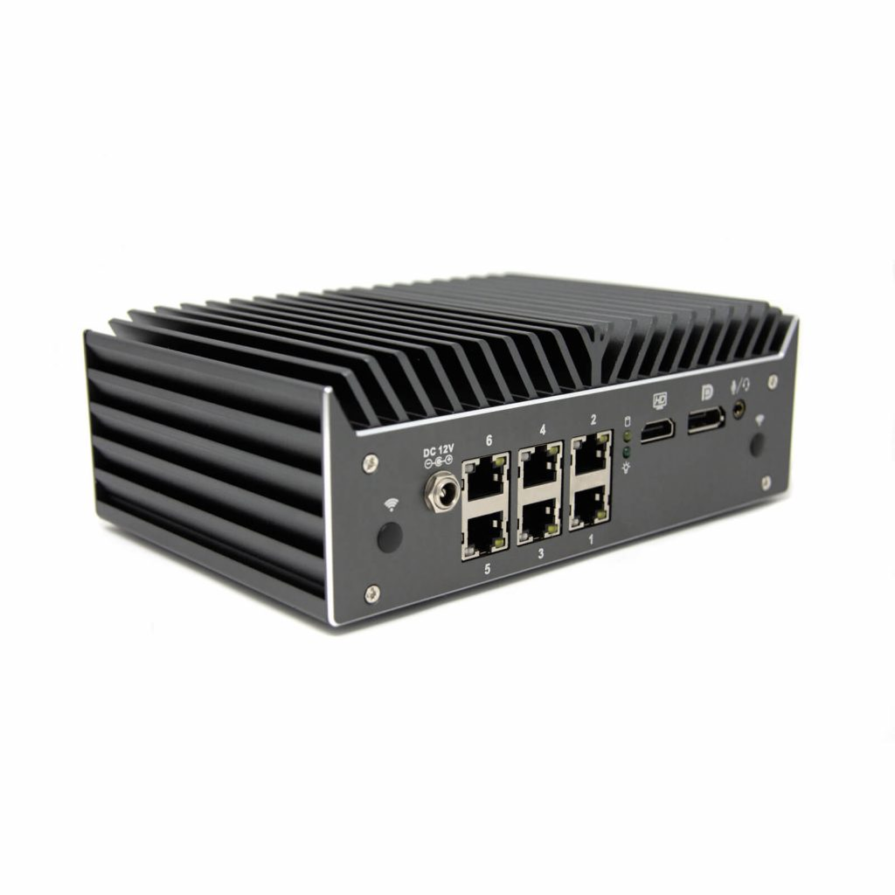
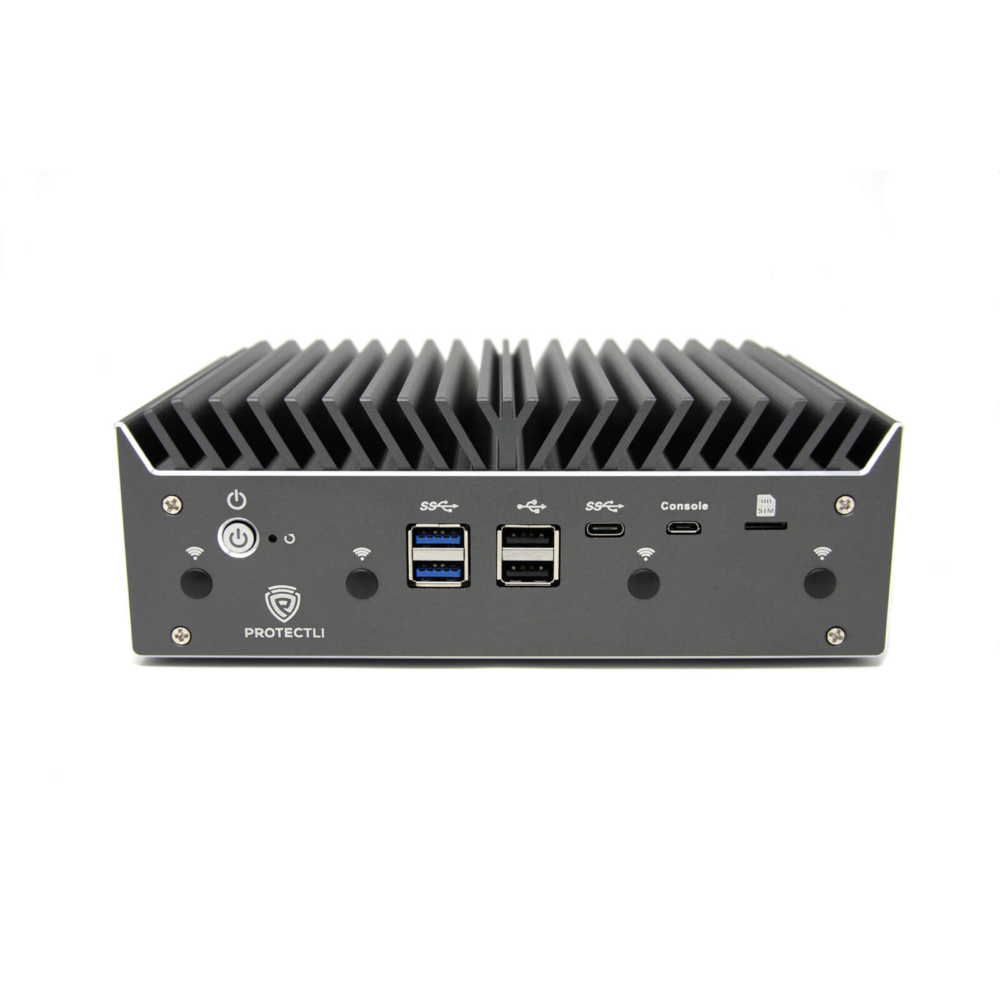

HARDWARE · LLIBERTAT PER TRIAR
El software és la base.
El hardware, el tries tu.
IoT Gateway NG és agnòstic del hardware. Tria un equip compatible amb els requisits de la instal·lació. El Protectli VP4651 és la nostra recomanació de referència.


COMPACTE.SENSE VENTILADORS.
PREPARAT PER CONNECTAR.
EQUIP RECOMANAT · UTILITZAT EN CLIENT
Protectli
Vault Pro VP4651
Una configuració que muntem en una instal·lació de client amb IoT Gateway NG.
- Processador
- Intel Core i5-10310U
- Connectivitat
- 6 ports Ethernet de 2,5 GbE
- Memòria de l’exemple
- 16 GB DDR4 · 2 × 8 GB
- Disc de l’exemple
- 500 GB NVMe
- Firmware recomanat
- coreboot amb iPXE
Arrenca per xarxa. Instal·la sense USB.
La configuració recomanada incorpora iPXE al firmware. Carrega l’entorn d’instal·lació per xarxa i prepara el gateway sense una memòria USB.
El VP4651 és una referència, no un requisit exclusiu. Validem cada alternativa segons el sistema base, la xarxa i els serveis necessaris.
Fotos de producte: Protectli · Galeria oficial del VP4651. Documentació de coreboot i arrencada per xarxa ↗